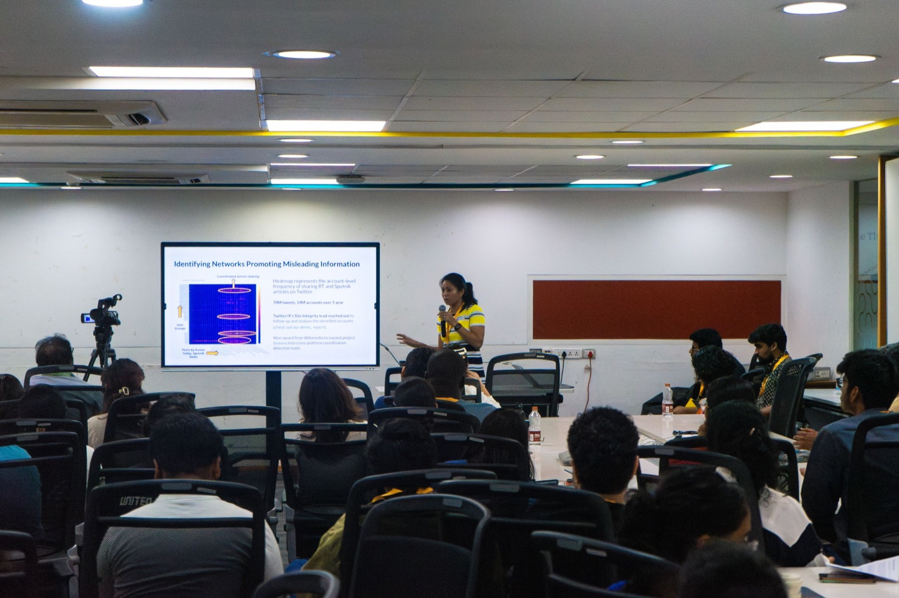
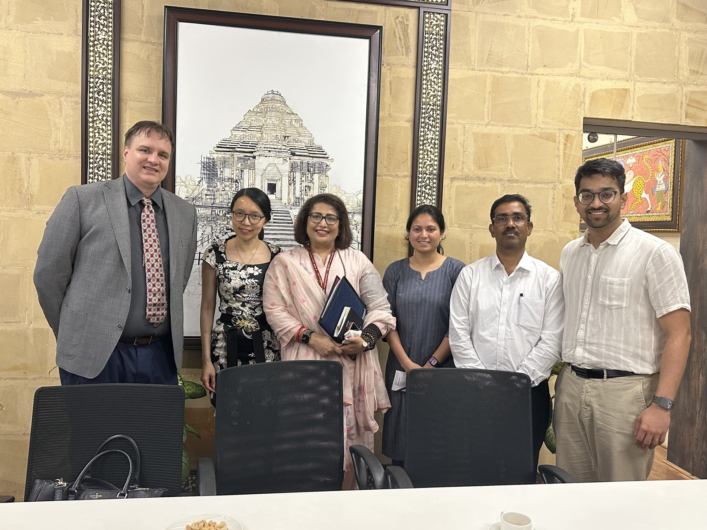
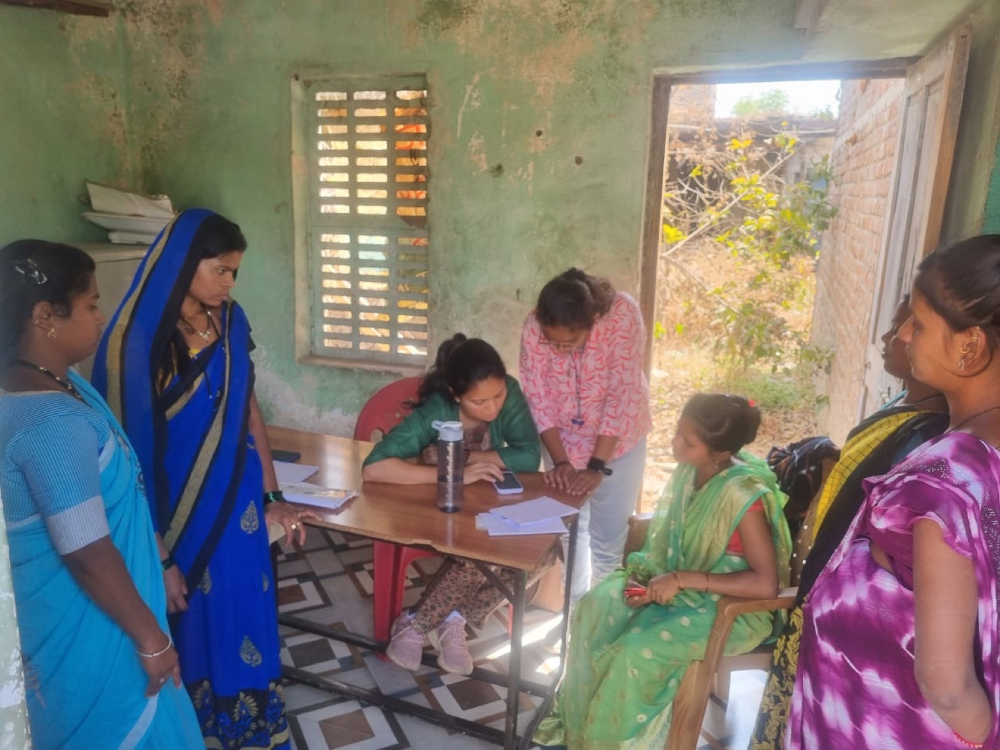

What's in your feed shapes what you decide
Enough people now make real decisions from what's in their feed, not from a newsroom.
For the first time, more people get their news from social video than from TV (Reuters Institute, 2025).
We rely on journalists to check it. They've gone dark.
What happens
events, claims, campaigns
Platforms & feeds
where people read it
Journalists & fact-checkers
the check on what's real
Communities decide
on unchecked feeds
Manipulation reaches the decisions that matter

Fake online job ads lure workers into forced-labour scam compounds.

Anti-vaccine fear cut Samoa's vaccination rate below 30%; dozens of children died.

A coordinated TikTok operation got the election annulled; the evidence vanished.
We show journalists what's shaping your feed, before it shapes your views
What happens
events, claims, campaigns
Platforms & feeds
public posts, through platform APIs
Journalists & fact-checkers
their view, restored through Arbiter
Communities decide
informed
Arbiter · a public-interest AI agent: it maps the networks behind deception, every claim cited.
Search every feed, aggregate what moves together, investigate who's behind it
Search the posts on every platform, aggregate the ones moving together, then investigate the accounts behind them. Every finding cites its source posts.
Arbiter is live, and already at scale
- 100+ organizations run cited investigations on one shared platform: newsrooms, fact-checkers, and civil-society groups
- Public data only, collected within platform terms of service and through platform APIs
Interactions = views, comments, and likes on the posts we collect. Public case studies at arbiter.simppl.org/studies.
One investigation: the fake-job scam pipeline
We asked the agent to map how migrant workers get recruited abroad, and where the scams hide. Built with Migrasia.
Lowongan Kerja Luar Negeri
Facebook🌏 LOKER LUAR NEGERI: RESMI & LEGAL ✅ Gaji besar, tanpa biaya awal. Slot terbatas, daftar sekarang! Info → wa.me/62812•••••
Loker Kebumen + 18 look-alike pages
FacebookSELEKSI KERJA via ZOOM: "BTPN Syariah" hiring drive. Apply → bit.ly/lamarco
What the agent found
- The same post ran on 21 look-alike "local" job boards, one shortlink
- Six accounts, one WhatsApp number
- A recruitment licence on display had already expired
Reported to national authorities, and invited to the Global Anti-Scam Alliance summit in Bangkok.
Monitoring tools show what trends. Arbiter shows who is behind it, with receipts.
One false claim about Maryland's 2026 primary, and how it actually moved, from our live case study.
commentary account
X🚨 Maryland revealed over 500,000 ILLEGAL MAIL-IN BALLOTS were sent out, and they got caught.
activist account
Bluesky500,000 illegal mail-in ballots in Maryland. They got caught.
coordination the same templated line, repeated by 50+ distinct accounts across X, Facebook, and Bluesky in one window.
✗ THE CLAIM Maryland "revealed 500,000 illegal mail-in ballots."
✓ THE RECORD a vendor error sent some voters the wrong-party primary ballot; the state resent replacements to everyone who requested one. news · 469 cited
✓ THE VERDICT Maryland election officials contradict the "fake ballots" framing.
Every line traces to the posts and the coverage behind it, so an editor can check each one. live study
Two weeks and five people → thirty minutes and one
Arbiter cuts the effort an investigation takes, and makes it reproducible.
manual cross-platform triage of scam-recruitment ads, one platform and one post at a time
the agent collects hundreds of suspect ads, maps the coordinated networks, and drafts the investigation; the analyst verifies and publishes
And it replicates. The pipeline we built for Indonesia re-ran for the Philippines the same week: new country, new language, same afternoon. Every partner we onboard makes the next one faster.
Effort figures from our Migrasia engagement. Public reports: Indonesia · Philippines.
Reliable information: global, state-wide, and last-mile

Civic trust. Elections are where manipulation concentrates. Newsrooms across 21 countries investigate and publish with receipts.

Child safety. We are building an early-warning system with state officials that joins online signals to law-enforcement data.

Health. Reliable answers at the last mile: Sakhi answers families' health questions, a person checking each one, for 350+ families in Maharashtra and Bangladesh.
The three programs on one page: simppl.org/simppl-brochure.pdf
Who signed up
100+ organizations across 21 countries signed up on their own; we are working with a growing subset as resources allow. The IFCN wants Arbiter in the hands of its whole verified network of ~142 fact-checkers worldwide.
When partners publish, institutions act
NEST caught the coordinated push behind a secret defamation bill before it surfaced publicly, reading the signal from fewer than 60 accounts.
Mongolia's only internationally accredited fact-checkers · case report
acted on evidence our partners published: Meta's Q1 2024 Bangladesh takedown, and YouTube terminating flagged channels.
Meta Adversarial Threat Report Q1 2024 · Burkina Faso case (appendix)
$2M raised jointly since 2021; $450K came straight to us
- Funders include Google, Mozilla, Ford, Omidyar, Wikimedia, and Columbia's Brown Institute
- The IRS took a year longer on our 501(c)(3), so partner orgs received grants for us
- Status in hand: INSEAD ($110K) and Columbia ($100K) fund us directly this year
Raised-with-collaborators total per the SimPPL Annual Report 2025; direct-receipt split confirmed by the team, July 2026.
Earned revenue reached $120K this year
- Subscriptions from larger newsrooms and civil-society clients: annual earned revenue
- Grants carry the free access for independent journalists and fact-checkers
- Inbound demand is real: users arriving from Dataminr and Meltwater asking to switch
Team figures, July 2026. $120K counts earned revenue this year; multi-year contract values run higher. INSEAD and Columbia are grants, listed separately.
Five-year plan: deepen journalism, scale civil society, sign agencies
Journalism
Civil society
Commercial · agencies
Grants fund journalist access; contracts pay for programs and measurement. Assembled from our Columbia/Brown venture-program materials and financial planner, July 2026.
Earned revenue catches grants by 2030
The 2027 plan is $1M: $700K grants and $300K earned. The modeled years extend it until contracts match grants and free access outlasts any single funder.
2026 booked (team, July 2026; Columbia's $100K spans 2026-27) · 2027 from our $1M working model, $200K of grants already committed · 2028-30 modeled, not a forecast.
Our first five years
Founded out of NYC Media Lab; bootstrapped nonprofit
First in India to win awards from both Google and Mozilla, then Wikimedia; 5 peer-reviewed papers published
CrowdTangle shuts down; members of its own team now help us, an early vote of confidence. Meta's Q1 Bangladesh takedown follows our partners' reporting; we join the MIT venture accelerator
Arbiter ships: UNDP AI cohort; first recurring revenue, $15K a quarter
Scale: Fast Forward accelerator; 100+ orgs, 21 countries, 318 case studies created; earned revenue reaches $120K
Funded by Google, Mozilla, Ford, Omidyar, Wikimedia, and the Brown Institute at Columbia. Sources in the appendix.
The team, and the board behind it

Swapneel Mehta · Founder & Executive Director
Former postdoc at MIT and BU in AI safety. Integrity Institute Board Member, advising EU, UK, and LatAm policymakers on online safety.

Dhara Mungra · Co-Founder, leads engineering
NYU MS; ex-Bombora; CAIDP & U. Mannheim fellow


Six full-time engineers build and run the platform: retrieval, agents, evaluation, infrastructure
Mukund Sudarshan · Anthropic
Christian Schroeder de Witt · University of Oxford
Chirag Raman · TU Delft
Sandra Khalil · All Tech Is Human
Rebecca Harvey · UK FCDO
Karan Dhabalia · entrepreneur (exited to Stripe)
Mansi Panchamia · World Bank
Stacey Peters · ex-VTDigger
Full board and team: simppl.org/team
The product is complemented by training programs we have run for years
For four to eight years we have trained journalists, students, and researchers to use these methods and tools. The programs build the audience and the credibility the product stands on.
NextGenAI. A year-long capstone fellowship where undergraduate teams build and ship AI responsibly. Sakhi, our health assistant, spun out of it.
AI for Journalism. Capacity-building for newsroom leaders and reporters, run with DW Akademie and JournalismAI.
AI for Healthcare. Training frontline health workers to run Sakhi, our WhatsApp health assistant, in local languages.
2,000+ students trained across these programs. Alumni have gone on to PhD programs, Microsoft Research, top companies, and startups.
Awards from Google and Mozilla. Programs backed by Genentech, DeepMind (via the NYU AI School), the University of Mannheim, DW Akademie, JournalismAI, and MIT. simppl.org/programs
Come in at a tier, or anchor the whole plan
Three funded activities; each is an annual tier of support you can lead on its own.
Every IFCN fact-checker equipped
- Subsidized access for 142 verified IFCN orgs
- Training cohorts in partner countries
- Reliable AI in Mongolian, Swahili, Bahasa, Hindi
One US civic program
- Election-integrity work with a state elections commission, or a state attorney general's study of extremist narratives
Child safety at full scope
- Odisha early-warning rollout with state officials
- Case-study library doubled to 60+ public; audience reach measured across partners
The complete 24-month proposal is $1.8M: all three programs at full scope, with budget and milestones ready for review. Anchor the full plan, fund all three for a year ($1M), or lead a single activity.
Happy to start with a project-based pilot ($20K–$50K) that grows into larger grants; detail in the appendix.
Three things to take with you
The journalists and fact-checkers communities trust lost their view of the feeds; Arbiter restores it, with every claim cited.
It already works at scale: 100+ organizations in 21 countries, and platforms and officials act on what they publish.
The full 24-month plan is $1.8M, with annual tiers from $250K up; every tier has a number attached.
founders@simppl.org simppl.org · arbiter.simppl.org · a U.S. 501(c)(3) nonprofit
Take these with you
Appendix (optional)
If your grant sits outside the $1M plan
Fund one specific activity in the plan
- A training cohort on the Kenya model: 10 journalists, one country
- One new language made reliable, or one partner investigation sprint
- Reporting stays proportionate: the public case studies plus a one-page annual letter
The complete proposal, then depth
- The full 24-month proposal is $1.8M: all three programs at full scope
- Beyond it: a third year of the same programs, and subsidy widened past the IFCN's 142 orgs
Every level buys a specific deliverable; no grant is too small to point at something real.
Appendix
How we measure impact
The way fact-checking funders expect: who we equip, what they publish, who acts on it.
| What we count | How | Status |
|---|---|---|
| Investigations published by partners | 31 public case studies, each linked | Measured today |
| Detection lead time | Days from partner finding to public confirmation: 19 in Mongolia | Measured today |
| Platform enforcement on flagged content | Actions on the public record: Meta takedown, YouTube terminations | Measured today |
| Health literacy | Pre/post surveys, 350+ families | Measured today |
| Journalists trained, active at 6 months | Per-cohort follow-up, starting with Kenya | Planned |
| Audience reached via partner publications | Partner analytics: dpa, Rappler, Jagran | Planned, in the 24-month plan |
Appendix · pull up if asked
Influence operations: the Burkina Faso case
A manufactured pan-African praise campaign around Ibrahim Traoré, and the takedowns that followed.

Live product: our Top Actors panel; one account drew 302.5M interactions across 17 posts in a 100%-positive campaign.
- Uniform 100%-positive sentiment and single-post spikes match coordination, not organic support
- Some clips were later labeled as altered by the platforms
- YouTube terminated channels our partners flagged, independent enforcement that validated the early detection
Burkina Faso / Traoré case study; platform actions on the public record.
Appendix · pull up if asked
Yes, we score at the account level
In our Bloomberg disinformation study, two "independent" YouTube channels turned out to run the same catalogue in different languages.
Tali
YouTube · EnglishP.17 — Former CIA Glenn Corn: The Truth About Russian Disinformation | ALLATRA TV #allatra #ukraine
catalogue
Vitalina Sumy
YouTube · Russian / UkrainianЧ.7 — Колишній співробітник ЦРУ Гленн Корн: Правда про російську дезінформацію | АЛЛАТРА ТБ Львів #аллатра #україна
Two channels running the same ~460-video ALLATRA catalogue (the "Glenn Corn" interview, the Ressler audiobook, the GRC "nanoplastics" reports), created nearly five years apart (Feb 2020, Dec 2024) and posing as independent voices in different languages. Actor resolution surfaces the link; how deep we score at the account level scales with the study.
Case study · Arbiter for a partner
Measuring a behaviour-change campaign in Pakistan
A creative agency runs online reproductive-health campaigns. Arbiter maps the conversation so they can target the work and measure its effect.
What Arbiter surfaces
- Who supports and who opposes family planning, and the religious and cultural taboos in play
- The messengers that move engagement: the Punjab Family Planning Program, health influencers, and opposition voices
- The formats that land: one gynaecologist-recommended contraception post drew 50,197 interactions in a week
posts collected, 92 analysed (YouTube + X, June 2026)
interactions on the "parental-health media" theme
A baseline map; the partner uses it to target campaigns and measure their effect over successive windows. Live study on arbiter.simppl.org.
Case study · Climate
One line, "climate change is a hoax", carries 45% of engagement
Our "Narratives regarding Climate change" study: 645 posts across X and YouTube, scored account by account.
of all interactions carry one narrative: "climate change is a hoax, clean energy is a scam."
on both clickbait and emotional manipulation for the loudest account, an anonymous conspiracy page.
DeSmog signed up on its own; the Disinfo Institute asked us to trace the ads behind climate-hoax campaigns.
Panels captured July 2026. Scores are five-point scales, high means heavier manipulation; reach is follower count.
Appendix
Why this took three years to build
- Every question our agent answers is benchmarked against hand-labeled data, which is unusual in this field; a self-healing loop improves it with each fix
- Multilingual by design: internal benchmarks in non-Latin scripts, and our Sakhi health assistant is benchmarked for health literacy in Hindi and Marathi
- Methods peer-reviewed at NeurIPS, ICML, AAAI, and ICWSM; per-investigation cost stays flat, so small newsrooms can afford us
- Public social data collected within platform terms of service (YouTube granted us 1.2M API calls a day); Dataminr and Meltwater users ask to switch
Benchmarks & methods, in depth → mehtaver.se/slides/arbiter.html
Appendix
Where these numbers come from (1 of 2)
| Claim | Value | Source |
|---|---|---|
| Posts collected | 3.7M+ | arbiter.simppl.org counters; team, July 2026 (refresh before presenting) |
| Interactions tracked | ~20B a month; 248B cumulative on monitored accounts | team, July 2026; metric is interactions (views, comments, likes), not people |
| Organizations / countries / users | 100+ (production shows ~160+ deduped; we cite the conservative floor) / 21 / 261 users | production analytics 2026-07-02 (self-reported affiliations); 21 countries per team; 100+ per user ruling 2026-07-13 |
| Case studies | 318 on-platform; 31 public; map NA 9 · EU 8 · Asia 7 · Africa 5 · ME 1 · AU 1 | production analytics 2026-07-02; arbiter.simppl.org/studies |
| Signup name wall | as shown | production analytics 2026-07-02, self-reported organization field, curated for recognizability |
| IFCN network / verified signatories | 170+ organizations / ~142 verified; distribution interest per team | poynter.org/ifcn; github.com/IFCN/verified-signatories; team, July 2026 |
| X API pricing | free tier ended; enterprise from ~$42K/month | X enterprise API public pricing, cited in our 2026 Mozilla proposal |
Appendix
Where these numbers come from (continued)
| Claim | Value | Source |
|---|---|---|
| Telegram investigation | ~4,500 pro-Russian channels mapped | mehtaver.se research figure; presented at Stanford Trust & Safety Research Conference |
| Mongolia early warning | 19 days; direction read from <60 accounts while redraft was secret | NEST case study; SimPPL funder brochure |
| Migrasia investigation | 16 impersonated manufacturers; 1,025 ads triaged; 575 screened in two days | Migrasia case study; SimPPL funder brochure |
| Traoré actor panel | 302.5M interactions across 17 posts | on-screenshot, Burkina Faso investigation |
| Gambling investigations (flow + answer panel) | 6,345 posts; MetaWin 23.5M; 72 themes; 964 users; 333/397 documents | arbiter.simppl.org/studies; two investigations + agent-answer screenshot |
| "Days of analysis into minutes" | measured effort reduction | measured with Migrasia and NEST (partner engagements, 2026) |
Appendix
Program, team, and finance numbers
| Claim | Value | Source |
|---|---|---|
| Meta Q1 2024 Bangladesh takedown | followed partner reporting | Meta Adversarial Threat Report Q1 2024 (public); SimPPL Annual Report 2025 |
| YouTube channel terminations | channels partners flagged, later independently terminated | Burkina Faso / Traoré case study; SimPPL Annual Report 2025 |
| Board of directors | 8 members, as listed on the team slide | simppl.org/team (confirmed by team, July 2026) |
| Timeline milestones | 2021 NYC Media Lab; 2023 Mozilla/NSF; 2024 CrowdTangle shut; 2025 UNDP + revenue; 2026 Fast Forward | SimPPL Annual Report 2025; Schmidt concept note v6 |
| Earned revenue | $15K/quarter reached 2025; $60K/$120K/$300K annual (reached/planned/target) | Annual Report 2025; 24-month proposal budget |
| Raised since 2021 | ~$450K to SimPPL from jointly-raised grants | SimPPL Annual Report 2025 |
| Kenya training cohort | 10 journalists, Africa Uncensored, DW Akademie | SimPPL Annual Report 2025 |
| Sakhi families reached | 350+ (100 study Maharashtra + 250 Bangladesh) | SimPPL Annual Report 2025 |
| Peer-reviewed papers | 14 | simppl.org/research |
| CrowdTangle shutdown | Meta closed it in August 2024 | Meta announcement, on the public record |
| Odisha seed funding | German foundation grant, infrastructure + early work | grant agreement (in data room) |
| YouTube API access | 1.2M calls/day granted | YouTube Data API grant letter (in data room) |
Appendix
Signed up across 21 countries
organizations signed up
countries

Public case studies with newsroom and NGO partners, each in the local language: arbiter.simppl.org/studies.
Appendix
Partners by country: 8 named here, 21 served
| Country | Partner | Work |
|---|---|---|
| Mongolia | NEST Center for Journalism | Legislative early warning, fact-checking |
| Indonesia | Migrasia (based in Hong Kong) | Scam-recruitment investigations |
| Philippines | Migrasia · Rappler | Recruitment-ad screening |
| Kenya | DW Akademie · Africa Uncensored + 10 journalists | Influence-operation training and investigations |
| Germany | dpa · DW Akademie | National press agency partnership |
| India | Jagran New Media · Odisha state partnership | Fact-checking, child-safety early warning |
| Bangladesh | Spreeha Foundation · policy think tank | Health program, threat reporting |
| United States | Gothamist/NYPR · Factchequeado | Local newsroom investigations, Spanish-language fact-checking |
Verified against arbiter.simppl.org and the SimPPL Annual Report 2025. Country count updated to 21 per the team (2026-07-12); simppl.org/about counted 8 at the last crawl, Hong Kong among them.